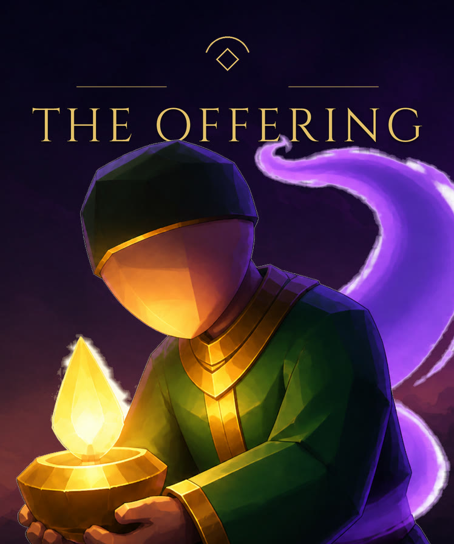
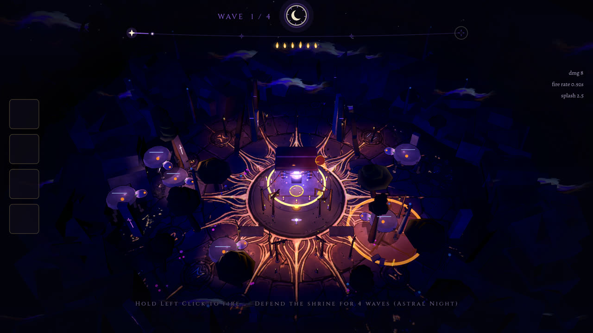
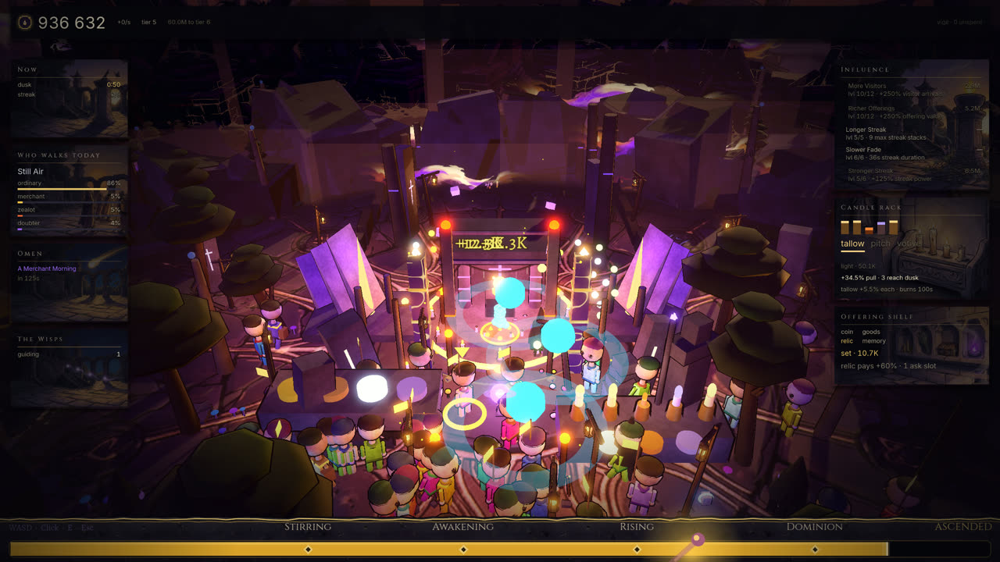
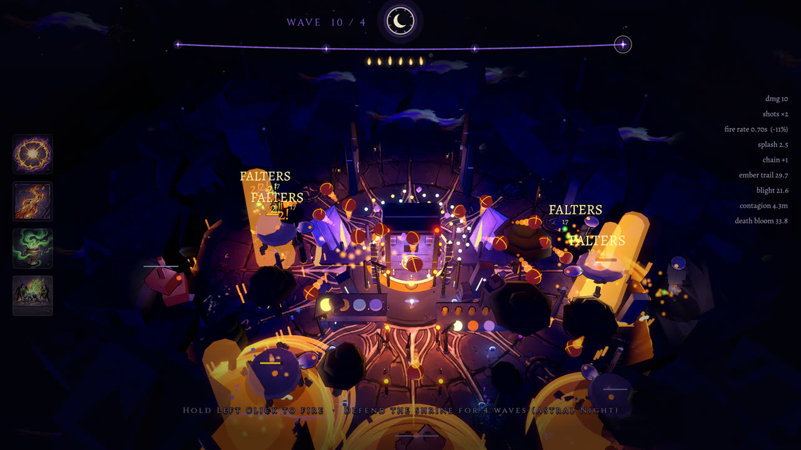

PRESS KIT
Everything a writer, streamer or curator needs for The Offering. The assets below are free to use in coverage — no permission required. Questions to press@naviandigital.com.
Fact sheet
- Developer — Dusk Moth Games
- Publisher — Navian Digital
- Platform — PC (Steam), Windows
- Steam App ID — 5069510
- Release — TBA
- Price — TBA
- Genre — Incremental / base building / tower defence
- Modes — Single-player, offline
- Languages — English, German, Spanish, French, Japanese, Korean, Portuguese (BR), Russian, Simplified & Traditional Chinese
Short description
Possess pilgrims and spend their offerings in this incremental shrine defence. Grow the crowd, light the candles, stack the cards. Then hold the plaza when the sun goes down and something walks in from the ruins.
Description
Possess the pilgrims who wander up to your shrine, walk them to the altar, and spend what they leave behind on more of everything. Grow the crowd by day. Hold the plaza by night. The offerings you gathered before dusk are the only thing standing between the dark and your flame.
Take a body, take an offering
Slip into any visitor on the road and steer them to the altar. Chain deliveries without a break to build a streak, and watch the pyre climb as the crowd feeds it. Every coin, relic and memory they leave is Essence.
Build the shrine
Spend Essence across five cards that reshape the plaza as they level: more visitors, richer offerings, a longer streak, a slower fade, a heavier one. Light the candle rack to pull people off the road faster.
Hold the night
At dusk the colour drains out of the world and things start walking in from the rubble. Choose one rite for the whole run and live with it: a bolt, a mortar that lobs on a real arc, a lance that punches through bodies, a scattering charge. Take a card between every wave.
Keep what you learn
Survive a night and earn a point for the Vigil, a tree that never resets. Its keystones change how the game is played rather than adding another percent.
Features
- A day loop that builds and a night loop that fights, on a 90-second clock
- Four rites, thirty-odd night cards, and a draft between every wave
- A permanent Vigil tree with run-changing keystones
- Hand-painted low-poly, lit like a votive candle. No stock assets
- Single-player, offline, no microtransactions
Key art


Screenshots





Video
About Dusk Moth Games
Dusk Moth Games is the studio building The Offering. Follow it on YouTube, Bluesky, Instagram and TikTok.
About Navian Digital
Navian Digital is an independent games publisher, founded in 2026. It backs small, dense games with hand-made art and systems you can read at a glance — no stock assets, no microtransactions, no live-service treadmill. Everything ships on desktop and is playable offline.
Contact
- Press & creators — press@naviandigital.com
- General — hello@naviandigital.com